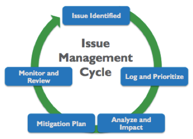
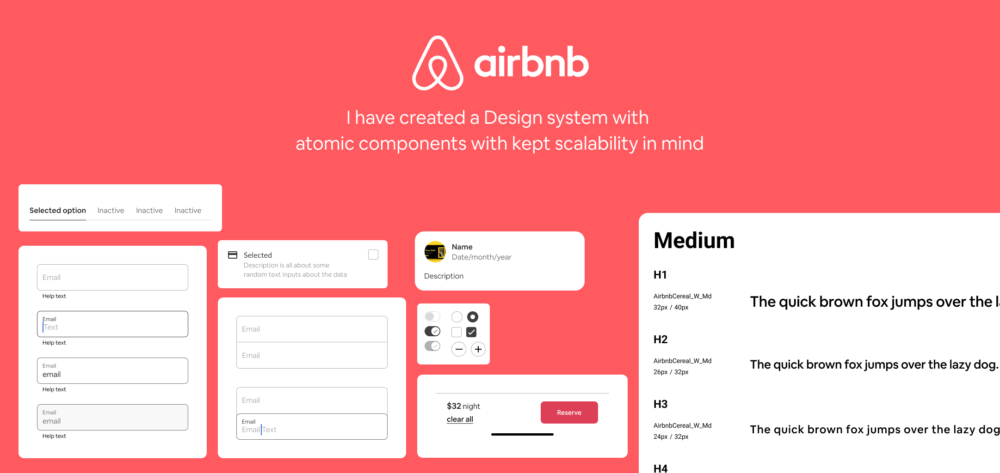
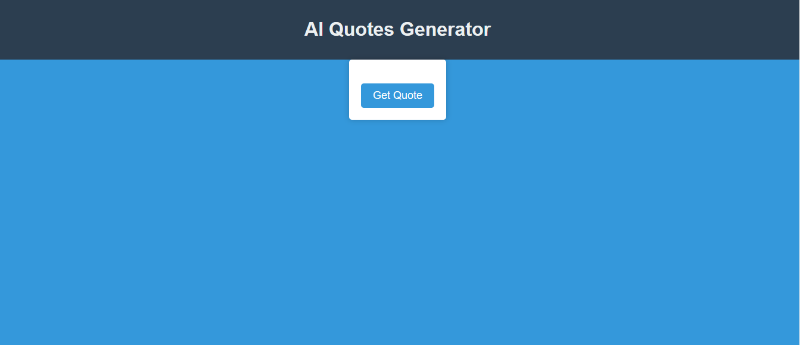

These are projects that I have worked on whether it was through College or a personal passion project.
These
are projects that I am particularly proud of and have gained a lot from working on them.

Hotel Management System
During my college years, I worked as a Front-End Developer Intern for two months at Force
By Four Multiservice Private
Limited. I contributed to the development of a Hotel Management System, focusing on
creating responsive and intuitive
user interfaces. This experience allowed me to strengthen my skills in front-end
development and apply modern web
technologies to real-world projects.
Visit Hotel Management System

Issue Management System
Designed and implemented a comprehensive system to register, track, and resolve issues for Autonomous
Underwater
Vehicles (AUVs) and SCMs. Developed an intuitive interface with three panels.Integrated a dynamic
dropdown system to display previously registered issues and retrieve associated data for efficient
resolution. Leveraged Firebase for backend hosting and seamless data storage and retrieval
Visit
Issue Management System

Image Forgery Detection
I developed an Image Forgery Detection system aimed at identifying and analyzing tampered or
manipulated digital images.
The system utilizes advanced image processing techniques and machine learning algorithms to detect
inconsistencies such
as splicing, cloning, or image retouching. It includes functionalities for feature extraction, error
level analysis, and
metadata inspection to ensure the authenticity of images. This project allowed me to gain expertise in
image processing,
pattern recognition, and implementing secure validation measures for digital media.
Visit
Image Forgery Detection

Autonomous Underwater Vehicle
As a Project Intern and Research & Development Intern in software engineering for 11 months during my
Master of Technology program, I
contributed to the
development of an Autonomous Underwater Vehicle (AUV). My responsibilities included software design,
mission planning,
and implementing systems for navigation, obstacle avoidance, and sensor integration. This project
provided hands-on
experience in advanced software engineering and autonomous systems development.
Visit Autonomous Underwater
Vehicle
Airline Ticket Booking System
I designed and developed an Airline Reservation System that streamlines the process of booking,
canceling, and managing
flight tickets. The system includes features such as user authentication, real-time flight availability,
seat selection,
and payment integration. It offers an intuitive interface for users to search for flights and an admin
panel for
managing flight schedules and passenger details. This project enhanced my understanding of database
management,
efficient query handling, and creating secure and user-friendly applications
Visit
Airline Ticket Booking System

Airbnb - Vacation Rental Company Clone
I developed a clone of Airbnb, the popular vacation rental platform, replicating key functionalities
such as property
listings, user authentication, booking management, and search filters. The project involved building a
responsive and
user-friendly interface, integrating backend features to handle data storage, and ensuring smooth
interaction between
hosts and guests. This experience helped me enhance my skills in full-stack development, database
design, and creating
scalable web applications.
Visit Airbnb - Vacation Rental
Company
Clone
Medical Management System
I developed a Medical Management System aimed at improving the efficiency of healthcare operations and
enhancing patient
care. The system integrates functionalities such as managing patient records, scheduling appointments,
and automating
billing processes. It also includes inventory tracking for medical supplies to ensure seamless resource
management.
Through this project, I gained valuable experience in database management, designing intuitive user
interfaces, and
creating software solutions tailored to the healthcare industry.
Visit Medical Management System
Airline Management System
I developed a Flight Booking System that enables users to search for flights, book tickets, and manage
their
reservations seamlessly. The system includes features like real-time flight availability, secure payment
integration,
and a user-friendly interface. This project strengthened my skills in database management, backend
development, and
creating efficient, scalable web applications.
Visit Airline Management System

Amazon Prime Mini Clone
Designed a video streaming platform UI using HTML, CSS, and JavaScript.
Built features like movie/show listings, video previews, and a responsive design.
Implemented a search bar for content filtering and dynamic content rendering.
Visit Amazon Prime Mini Clone

AI Quote Generator
Developed a web application using HTML, CSS, and JavaScript to generate inspirational quotes
dynamically.
Integrated a machine learning model or API to create personalized quotes based on user input.
Enhanced user engagement with responsive design and interactive UI features.
Visit AI Quote Generator